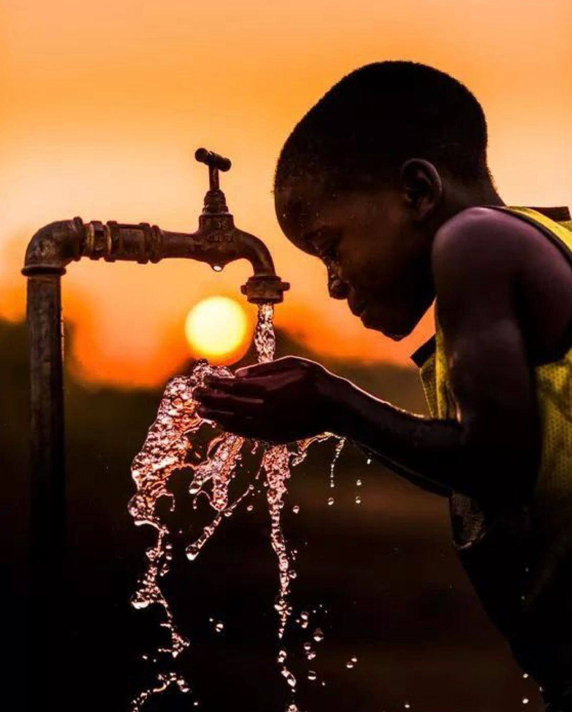
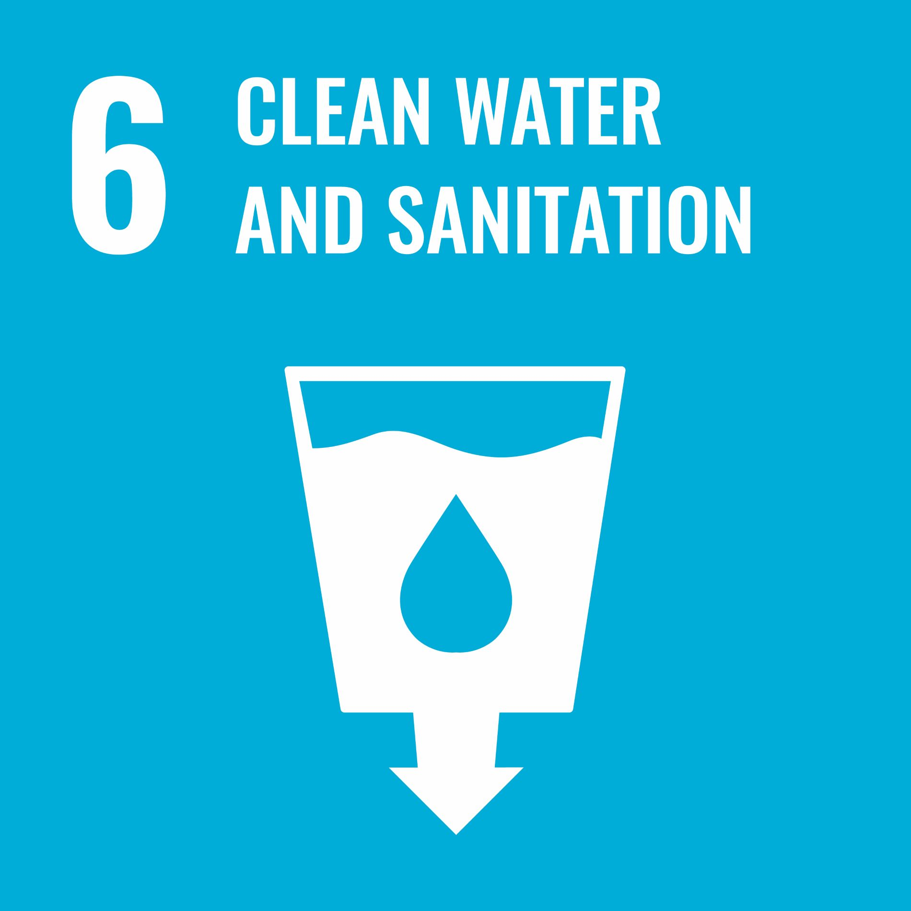

SDG 6: Clean Water and Sanitation
Ensuring Water Security for All by 2030
What is SDG 6?
Sustainable Development Goal 6, established by the United Nations in 2015, represents a global commitment to ensure availability and sustainable management of water and sanitation for all by 2030. This ambitious goal recognizes that access to safe water, sanitation, and hygiene (WASH) is not just a necessity,it's a fundamental human right that's essential for the health of both people and our planet.
SDG 6 encompasses a comprehensive approach to water challenges, addressing drinking water quality, sanitation infrastructure, hygiene practices, wastewater management, and sustainable water resource management on a global scale.
Why Clean Water and Sanitation Matter
The Power of Clean Water
- Health and survival: Essential for drinking, cooking, and personal hygiene
- Economic development: Supporting agriculture, industry, and local businesses
- Education: Allowing children to attend school instead of collecting water
- Disease prevention: Eliminating waterborne illnesses like cholera, dysentery, and typhoid
The Critical Role of Proper Sanitation
- Public health protection: Reducing the spread of infectious diseases
- Dignity and safety: Privacy and security, especially for women and girls
- Environmental protection: Preventing contamination of water sources
- Breaking poverty cycles: Less healthcare costs, more productivity

Key Targets Under SDG 6
- Target 6.1: Universal Access to Safe Drinking Water
- Target 6.2: Adequate Sanitation for All
- Target 6.3: Improve Water Quality
- Target 6.4: Water Efficiency and Scarcity
- Target 6.6: Protect Water Ecosystems

The Global Water Crisis
In Numbers
2 Billion
WITHOUT SAFE DRINKING WATER AT HOME WORLDWIDE
3.5 Billion
LACK PROPER SANITATION FACE HYGIENE CAHALLENGES
800+
CHILDREN DIE DAILY FROM WATERBORNE DISEASES